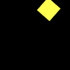
(1)
A yellow shape is a square if and only if there is a square.
There is a yellow square if and only if a shape is a yellow square.
A yellow shape is a circle if and only if a pentagon is a yellow shape.
There is a square and there is a yellow shape.
A yellow shape is a square or there is a semicircle.
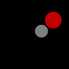
(2)
If a shape is a magenta triangle a shape is a circle.
A pentagon is a red shape if and only if a square is a gray shape.
There is a blue circle if a shape is a circle.
A red shape is a semicircle or a circle is a gray shape.
If a shape is a gray shape a shape is a circle.
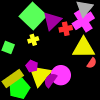
(3)
A shape is a yellow shape if and only if a shape is a cyan shape.
There is a square and a shape is a gray cross.
There is a red shape and a shape is an ellipse.
There is a triangle and a shape is a yellow triangle.
There is a red ellipse if there is a yellow shape.
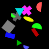
(4)
There is a gray triangle or there is a cyan semicircle.
There is a semicircle if there is a semicircle.
A shape is a cyan semicircle if and only if a rectangle is a blue shape.
A shape is a yellow cross or there is a gray ellipse.
A green shape is a semicircle and a shape is a green semicircle.
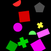
(5)
A red shape is a semicircle and there is a semicircle.
There is a red circle or a square is a yellow shape.
There is a pentagon and there is a yellow cross.
There is a green triangle or there is a green circle.
There is a red square and a shape is a cyan shape.
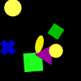
(6)
There is a green square if and only if there is a green square.
A shape is a yellow circle or a cross is a blue shape.
A shape is a cyan shape and a shape is a cross.
There is a gray ellipse if and only if there is a green ellipse.
A square is a green shape and there is a yellow shape.
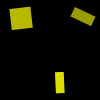
(7)
A shape is a square if and only if a shape is a red shape.
A shape is a triangle and a shape is a blue circle.
A shape is a yellow rectangle if and only if a shape is a green shape.
A red shape is a rectangle or a shape is a gray square.
A yellow shape is a square or a shape is a yellow shape.
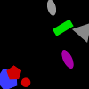
(8)
There is a magenta ellipse or there is a magenta shape.
A triangle is a red shape or there is a magenta ellipse.
If there is a red circle a shape is a cyan shape.
There is a magenta pentagon and a gray shape is a triangle.
A red shape is a pentagon and a gray shape is an ellipse.
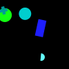
(9)
A magenta shape is a semicircle if and only if there is a cyan rectangle.
A cyan shape is a circle and a shape is a blue rectangle.
If there is a green circle a green shape is a pentagon.
There is a cyan cross if and only if there is a cyan circle.
A circle is a cyan shape if and only if a shape is a gray triangle.
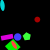
(10)
A shape is a green shape if and only if a shape is a green rectangle.
If an ellipse is a red shape a shape is a red rectangle.
A shape is a blue rectangle if and only if there is a blue square.
A square is a green shape if and only if a rectangle is a magenta shape.
An ellipse is a green shape if and only if a shape is a blue shape.
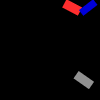
(11)
If a shape is a red rectangle there is a cross.
There is a gray rectangle and there is a red shape.
A shape is a rectangle if and only if there is a circle.
A shape is a green shape and there is a cyan shape.
A shape is a triangle or a shape is a cyan rectangle.
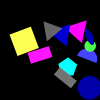
(12)
A shape is a blue triangle and there is a blue ellipse.
There is a blue triangle and a shape is a blue ellipse.
A shape is a yellow rectangle if and only if there is a red shape.
A green shape is a semicircle and a shape is a blue triangle.
A triangle is a cyan shape if there is a semicircle.
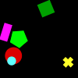
(13)
There is a yellow pentagon if there is a square.
If a shape is a magenta rectangle an ellipse is a green shape.
A shape is a yellow cross and a shape is a magenta rectangle.
There is a green pentagon and a shape is a green pentagon.
A magenta shape is a rectangle and a shape is a triangle.
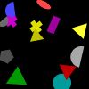
(14)
A shape is a gray semicircle if a shape is a cross.
There is a magenta triangle or there is a green cross.
A green shape is an ellipse and there is a magenta ellipse.
A shape is a cyan semicircle or a blue shape is a pentagon.
A green shape is a rectangle if and only if a shape is a semicircle.
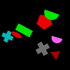
(15)
A triangle is a red shape or a shape is a magenta ellipse.
There is a cyan cross or a triangle is a green shape.
A shape is a cyan cross and a pentagon is a red shape.
If a semicircle is a magenta shape a shape is a yellow shape.
There is a red ellipse and there is a magenta triangle.
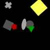
(16)
There is a gray circle if and only if a red shape is a circle.
A shape is a rectangle or there is a yellow rectangle.
A pentagon is a gray shape or a shape is a yellow circle.
There is a gray square and there is a gray ellipse.
A shape is a red pentagon and there is a red shape.
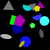
(17)
There is a blue ellipse or there is a cross.
A shape is a magenta triangle and there is a blue pentagon.
A shape is a yellow shape and there is a blue ellipse.
A shape is a cross if and only if there is a gray rectangle.
There is a gray pentagon or there is a red semicircle.
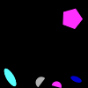
(18)
There is a gray shape and a shape is a semicircle.
A pentagon is a magenta shape if and only if there is a red ellipse.
There is a magenta pentagon if a shape is a gray semicircle.
There is an ellipse and a shape is a magenta pentagon.
A magenta shape is a pentagon or there is a pentagon.
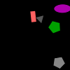
(19)
There is a magenta ellipse if and only if a gray shape is an ellipse.
A shape is a green pentagon if and only if an ellipse is a red shape.
There is a red pentagon if there is a magenta shape.
A shape is a red ellipse and a red shape is a rectangle.
There is a magenta shape or a shape is a gray pentagon.
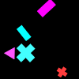
(20)
A red shape is a pentagon or there is a pentagon.
There is a square and a cross is a cyan shape.
A rectangle is a magenta shape if and only if a shape is a cyan shape.
If an ellipse is a red shape there is a cyan shape.
A shape is a magenta triangle if and only if a shape is a cyan semicircle.
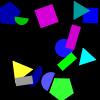
(21)
There is a green pentagon if a shape is a cross.
There is a triangle and a gray shape is a rectangle.
There is a gray rectangle if a shape is a magenta rectangle.
A cyan shape is a triangle and a blue shape is a square.
A shape is a yellow triangle if and only if there is a cyan triangle.
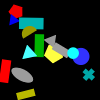
(22)
There is a red shape if there is a cyan rectangle.
There is a square or a shape is a cyan shape.
A cyan shape is a rectangle if and only if a cyan shape is a rectangle.
A shape is a magenta circle if and only if a shape is a rectangle.
A shape is a green cross or there is a cyan pentagon.
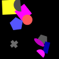
(23)
If a shape is a yellow semicircle there is a square.
If a shape is a gray cross there is a triangle.
A gray shape is a cross if and only if a cross is a red shape.
A shape is a magenta square or a shape is a gray semicircle.
An ellipse is a green shape if and only if a shape is a magenta ellipse.

(24)
There is a blue shape or there is a yellow shape.
There is a yellow pentagon if there is a yellow shape.
A shape is a circle and there is a cyan circle.
There is a green shape or a shape is a cross.
There is a red shape and a red shape is a pentagon.
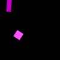
(25)
A rectangle is a magenta shape if and only if a shape is a red shape.
A magenta shape is a square or there is a green semicircle.
There is a blue rectangle if and only if a shape is a square.
A shape is a magenta rectangle and a shape is a magenta square.
A gray shape is a rectangle and a semicircle is a magenta shape.
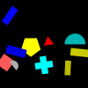
(26)
A shape is a cross and a shape is a triangle.
A shape is a red triangle if there is a semicircle.
A blue shape is a cross or a square is a yellow shape.
A shape is a cyan square and a gray shape is a pentagon.
A cross is a cyan shape and a gray shape is a semicircle.
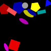
(27)
A shape is a cyan triangle if a yellow shape is a pentagon.
There is a gray rectangle if there is a yellow shape.
There is a semicircle or a shape is a blue cross.
A pentagon is a yellow shape if and only if there is a yellow triangle.
If there is a cyan ellipse a shape is a yellow rectangle.
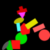
(28)
There is a semicircle if and only if a square is a red shape.
A cyan shape is a circle or an ellipse is a gray shape.
There is a red square or there is a red rectangle.
A cyan shape is a rectangle if and only if a green shape is a cross.
A shape is a red triangle and a pentagon is a red shape.
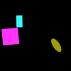
(29)
There is a magenta ellipse if a shape is a cyan rectangle.
If there is a yellow ellipse a shape is a cyan square.
A shape is a red shape if a shape is a square.
There is a yellow pentagon if a shape is a yellow shape.
There is a yellow square if a shape is a magenta rectangle.

(30)
A shape is a green circle and there is a red triangle.
There is a gray triangle if and only if a red shape is a square.
A shape is a red cross if there is a rectangle.
A shape is a green circle or a pentagon is a gray shape.
If there is a cyan triangle there is a rectangle.
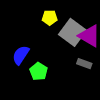
(31)
A blue shape is a triangle or a pentagon is a red shape.
A green shape is a pentagon or there is a triangle.
A shape is a magenta triangle and a shape is a yellow shape.
There is a cyan shape or a shape is a cyan semicircle.
If a shape is a gray shape a shape is a square.
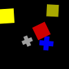
(32)
A shape is a red triangle if and only if there is a red square.
A square is a yellow shape and there is a square.
There is a red cross if and only if there is a cross.
If there is a red square a shape is a red cross.
If a cross is a gray shape there is a circle.
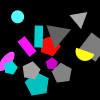
(33)
There is a cyan pentagon and a shape is a gray triangle.
There is an ellipse if a shape is a yellow triangle.
A shape is a magenta semicircle if and only if a shape is a circle.
If there is a blue shape a shape is a gray semicircle.
There is a yellow rectangle or a green shape is an ellipse.
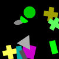
(34)
If a triangle is a gray shape a shape is a green square.
A cross is a yellow shape or a shape is a blue cross.
There is a yellow circle if a green shape is a circle.
A magenta shape is a rectangle if and only if a shape is a green rectangle.
There is a magenta cross if a shape is a cross.
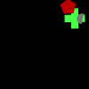
(35)
There is a green shape if and only if a cross is a gray shape.
A shape is a gray circle and a shape is a cross.
If a shape is a cyan shape a shape is a green cross.
If a shape is a gray semicircle a pentagon is a red shape.
A shape is a red semicircle if and only if a shape is a red pentagon.
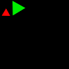
(36)
There is a rectangle if and only if a shape is a rectangle.
An ellipse is a red shape or a triangle is a cyan shape.
A green shape is a pentagon or a triangle is a gray shape.
If a shape is a red triangle a pentagon is a red shape.
There is a red shape and there is a red triangle.
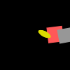
(37)
If an ellipse is a gray shape a yellow shape is a pentagon.
A shape is a square and a square is a yellow shape.
A shape is a gray square and there is a blue shape.
There is a square or a gray shape is a square.
There is a yellow ellipse and a shape is a yellow ellipse.
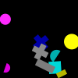
(38)
If there is a magenta circle a magenta shape is a cross.
A shape is a blue shape and there is a yellow circle.
There is a red shape if and only if there is a gray square.
A shape is a green shape and a shape is a magenta cross.
There is a yellow shape and there is a magenta semicircle.
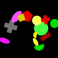
(39)
There is a magenta cross or there is a triangle.
A shape is a red rectangle and an ellipse is a magenta shape.
There is a yellow cross and a shape is a green circle.
There is a yellow pentagon and a green shape is a circle.
A semicircle is a gray shape or a shape is a green ellipse.
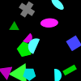
(40)
If a shape is a blue pentagon a shape is a green rectangle.
A shape is a blue triangle or there is a blue semicircle.
A gray shape is a rectangle if a blue shape is a square.
There is a gray semicircle if there is a green pentagon.
There is a cyan semicircle and a cyan shape is an ellipse.
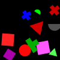
(41)
A magenta shape is a square and there is a blue cross.
If there is a green semicircle a shape is a yellow triangle.
There is a green circle if a red shape is a cross.
There is a magenta triangle or there is a blue square.
A shape is a blue semicircle if and only if a shape is a pentagon.
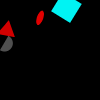
(42)
There is a rectangle if and only if a red shape is an ellipse.
There is a red triangle and there is a green shape.
There is a gray semicircle and there is a cyan square.
If a shape is a gray semicircle there is a square.
A shape is a red triangle and there is a gray semicircle.
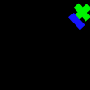
(43)
There is a green cross or there is a red ellipse.
There is a yellow rectangle or there is a red shape.
A shape is a blue square or a shape is a blue shape.
A shape is a pentagon or a shape is a green ellipse.
A green shape is a rectangle or there is a cross.
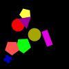
(44)
If there is a circle a shape is a square.
There is a yellow rectangle if and only if a red shape is a cross.
There is a rectangle and a shape is a circle.
If a shape is a cross there is a square.
If there is a yellow circle a red shape is a square.
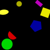
(45)
A shape is a blue shape and a shape is a red cross.
There is a yellow ellipse and there is a blue shape.
If there is a blue pentagon a pentagon is a red shape.
There is a magenta shape and a shape is a magenta rectangle.
A magenta shape is a rectangle and there is a gray shape.
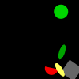
(46)
There is a yellow ellipse and there is a gray shape.
There is a yellow shape if a shape is a yellow ellipse.
A gray shape is a square if and only if there is a red square.
A shape is a green shape or a shape is a gray semicircle.
A shape is a green pentagon or a shape is a blue circle.
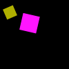
(47)
A shape is a circle or a shape is a square.
A shape is a magenta square or there is a square.
There is a green triangle or there is a yellow pentagon.
There is a magenta shape if and only if a magenta shape is a square.
There is a rectangle if and only if a square is a yellow shape.
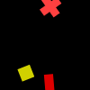
(48)
A red shape is a triangle and a shape is a semicircle.
A shape is a red cross if a magenta shape is a rectangle.
If there is a red cross a cross is a magenta shape.
A yellow shape is a cross if a red shape is a rectangle.
A shape is a red triangle or a shape is a yellow cross.
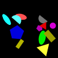
(49)
There is a triangle if and only if a shape is a blue semicircle.
A rectangle is a yellow shape if and only if a red shape is an ellipse.
A shape is a green shape and there is a pentagon.
If there is a blue cross a pentagon is a green shape.
A yellow shape is a triangle if and only if there is a yellow rectangle.
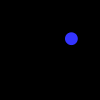
(50)
A blue shape is a pentagon if there is a circle.
There is a magenta shape or there is a green circle.
There is a green circle if there is a blue rectangle.
There is a gray circle or a shape is a blue circle.
A shape is a blue circle and a circle is a blue shape.
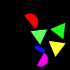
(51)
A triangle is a yellow shape and a shape is a yellow triangle.
A shape is a magenta shape and a triangle is a green shape.
A green shape is a triangle and a shape is a green triangle.
A magenta shape is an ellipse and a shape is a blue shape.
There is an ellipse and a triangle is a blue shape.

(52)
There is a yellow shape or an ellipse is a blue shape.
A square is a magenta shape or there is a green circle.
A semicircle is a yellow shape if a shape is a triangle.
A semicircle is a green shape and a shape is a yellow semicircle.
A cyan shape is a rectangle or there is a cross.
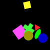
(53)
A square is a magenta shape if and only if there is a rectangle.
A yellow shape is a square if and only if there is a green shape.
A square is a magenta shape and there is a red triangle.
If an ellipse is a blue shape there is a red circle.
A circle is a cyan shape and a shape is a yellow ellipse.
(54)
There is a gray shape if and only if a shape is a gray circle.
A shape is a pentagon if and only if there is a gray triangle.
There is a red shape if a shape is a gray semicircle.
There is a gray circle if and only if there is a pentagon.
A shape is a gray shape if and only if there is a pentagon.
(55)
There is a red pentagon if and only if a shape is an ellipse.
A shape is a red rectangle or there is a magenta circle.
There is a magenta shape if a pentagon is a red shape.
A shape is a gray pentagon and a circle is a blue shape.
If a pentagon is a red shape there is a semicircle.
(56)
A shape is a gray shape and a magenta shape is a square.
There is a yellow shape if a square is a cyan shape.
A gray shape is a pentagon and a yellow shape is a circle.
If a magenta shape is an ellipse there is a magenta square.
There is a gray shape and there is a red rectangle.
(57)
There is a red semicircle or a shape is a green cross.
A shape is a green pentagon and a shape is a yellow shape.
There is a magenta rectangle if a shape is a cyan shape.
A shape is a green ellipse and a shape is a green ellipse.
A red shape is a rectangle or a shape is a square.
(58)
A shape is a green semicircle or a yellow shape is a triangle.
A rectangle is a red shape if and only if a shape is a square.
There is a cyan triangle if a circle is a magenta shape.
There is a semicircle and there is a magenta rectangle.
There is a blue pentagon or there is a yellow triangle.
(59)
If there is a blue pentagon a shape is a blue square.
There is a cyan cross and a shape is a gray shape.
A yellow shape is a cross if and only if a pentagon is a gray shape.
If there is an ellipse there is a yellow cross.
If a square is a yellow shape there is a square.
(60)
If a shape is a red semicircle a shape is a blue pentagon.
There is a red circle or a cyan shape is a triangle.
A pentagon is a red shape and a red shape is a semicircle.
A shape is a cyan ellipse and there is a circle.
If a shape is a blue circle a shape is a cyan shape.
(61)
If a shape is a green semicircle a shape is a blue shape.
There is a blue ellipse if and only if there is an ellipse.
If there is an ellipse a shape is a triangle.
If there is a gray pentagon a shape is a cyan square.
There is a gray ellipse if there is a gray shape.
(62)
If there is a cyan ellipse there is a square.
A shape is a yellow rectangle if and only if a yellow shape is a rectangle.
There is a red cross if there is a gray shape.
There is a gray shape and an ellipse is a blue shape.
A shape is a red pentagon and a shape is a gray pentagon.
(63)
A cross is a yellow shape and a red shape is a square.
A rectangle is a cyan shape if and only if there is a red shape.
There is a cyan rectangle if and only if there is a yellow square.
A triangle is a red shape and a shape is a red pentagon.
A green shape is a cross and a rectangle is a gray shape.
(64)
There is an ellipse if a shape is a cyan shape.
A shape is a green shape and a shape is a semicircle.
A shape is a cyan triangle or there is a cyan cross.
A shape is a red shape and a cyan shape is a circle.
There is a cyan triangle if and only if a shape is a cyan triangle.
(65)
There is a yellow shape if a semicircle is a green shape.
A pentagon is a yellow shape if and only if a shape is a yellow semicircle.
There is a green semicircle if and only if there is a green semicircle.
A shape is a green shape and there is a cyan pentagon.
A shape is a red semicircle if and only if a shape is a yellow shape.
(66)
There is a square or a shape is an ellipse.
There is a yellow triangle if and only if there is a yellow cross.
There is a magenta shape or a shape is a yellow rectangle.
A shape is a red shape and a shape is a blue circle.
A shape is a green circle if and only if a shape is a magenta square.
(67)
There is a green square or a shape is a cyan circle.
There is a pentagon or there is a blue square.
If a green shape is an ellipse there is a triangle.
If a shape is a cyan triangle a shape is a magenta ellipse.
There is a cyan square or a shape is a red cross.
(68)
A green shape is a cross if and only if there is a blue square.
There is a magenta square and a red shape is a pentagon.
There is a blue shape and a shape is a blue square.
If there is a blue pentagon there is a rectangle.
If a cross is a magenta shape a semicircle is a blue shape.
(69)
A shape is a magenta circle if and only if there is a red ellipse.
A shape is a blue shape if and only if a shape is a blue semicircle.
A circle is a magenta shape and a shape is a cyan square.
A shape is a blue pentagon and there is a rectangle.
There is a magenta circle or a shape is a magenta circle.
(70)
A red shape is a cross if and only if an ellipse is a cyan shape.
A cross is a red shape and there is a triangle.
A cross is a red shape and a red shape is a triangle.
A shape is a pentagon and a triangle is a red shape.
There is a red cross if a red shape is a triangle.
(71)
A shape is a blue semicircle or a shape is an ellipse.
If there is a blue triangle a shape is a red shape.
A shape is a blue semicircle or a shape is a square.
If a shape is a gray triangle a shape is a gray shape.
If a shape is a gray shape a shape is a blue rectangle.
(72)
There is a blue rectangle and there is a magenta pentagon.
A shape is a red square and a triangle is a blue shape.
A shape is a cross if and only if there is a circle.
A red shape is a triangle and a shape is a magenta square.
A red shape is an ellipse if and only if a shape is a red ellipse.

(73)
A cross is a green shape and a shape is a green semicircle.
A semicircle is a green shape and there is a green cross.
If a semicircle is a green shape there is a square.
A shape is a blue shape if and only if a shape is a semicircle.
A shape is a green semicircle and there is a green shape.

(74)
There is a magenta square and a magenta shape is a pentagon.
A shape is a triangle and a shape is a triangle.
There is a gray pentagon if and only if there is a magenta shape.
A shape is a green shape and a square is a red shape.
There is a green ellipse if a shape is a triangle.
(75)
A shape is a gray ellipse or a yellow shape is a pentagon.
There is a green semicircle and there is a magenta triangle.
A red shape is a pentagon and there is a cyan shape.
If a cyan shape is an ellipse there is a gray square.
A shape is a blue triangle and there is a green pentagon.
(76)
A shape is a magenta ellipse and an ellipse is a magenta shape.
There is a magenta pentagon and a magenta shape is an ellipse.
If a semicircle is a magenta shape a shape is a yellow ellipse.
A shape is an ellipse and a shape is a magenta ellipse.
There is a magenta ellipse and a shape is a magenta shape.
(77)
There is a cross or there is a gray ellipse.
A shape is a red ellipse or a yellow shape is a pentagon.
A gray shape is a rectangle if and only if a pentagon is a gray shape.
A shape is a cyan cross or there is a yellow semicircle.
A rectangle is a yellow shape if and only if a circle is a magenta shape.
(78)
A shape is a green shape and there is a green cross.
There is a red cross if and only if there is a green cross.
If there is a green cross a pentagon is a green shape.
A cross is a green shape or a green shape is a pentagon.
A shape is a green ellipse if and only if a shape is a green cross.
(79)
A circle is a gray shape if and only if there is a green circle.
A shape is a red circle or a cross is a red shape.
There is a pentagon or there is a yellow shape.
If there is a red shape there is a circle.
There is a green circle and a shape is a red triangle.
(80)
A magenta shape is a pentagon or there is a gray shape.
A pentagon is a blue shape and an ellipse is a green shape.
There is a red cross if and only if there is a magenta cross.
If a shape is a red triangle a shape is a pentagon.
If there is a green shape a shape is a gray shape.
(81)
If a shape is a pentagon there is a pentagon.
There is a cross or a shape is a yellow shape.
A cross is a green shape or a green shape is a triangle.
There is a circle and a green shape is an ellipse.
There is a green ellipse and there is a green ellipse.
(82)
A shape is a cyan triangle or a shape is a cyan semicircle.
A shape is a blue shape if and only if a shape is a green shape.
There is a yellow square if and only if a shape is a gray square.
There is a cyan cross if there is a square.
There is a cyan square and a shape is a cyan rectangle.
(83)
A magenta shape is a square and a shape is a blue shape.
If there is a green shape a shape is a rectangle.
There is a blue semicircle or there is a gray ellipse.
A shape is a yellow shape or there is a yellow shape.
There is a gray shape and there is a magenta circle.
(84)
There is a magenta ellipse if and only if a shape is a blue ellipse.
A blue shape is a pentagon if and only if a shape is a green ellipse.
A shape is a blue pentagon and a shape is a blue shape.
If a shape is an ellipse a shape is a cyan shape.
A shape is an ellipse or a shape is a blue shape.
(85)
A shape is a yellow cross or there is a pentagon.
A shape is a yellow cross or there is a cyan square.
A green shape is a circle and a shape is a yellow circle.
A shape is a blue pentagon or there is a yellow circle.
A shape is a green pentagon if a shape is a square.
(86)
A blue shape is a rectangle if a blue shape is a semicircle.
If there is a yellow ellipse a shape is a red rectangle.
A shape is a blue rectangle if and only if there is a triangle.
A shape is a semicircle and a square is a gray shape.
A shape is a red circle and a shape is a green shape.
(87)
If a shape is a green triangle a shape is a yellow shape.
There is a magenta triangle and a shape is a square.
A magenta shape is a semicircle or there is a green semicircle.
There is a yellow semicircle and a rectangle is a green shape.
If there is a gray square a shape is a yellow square.
(88)
A square is a red shape and a shape is a red square.
If there is a gray cross a triangle is a gray shape.
A magenta shape is a pentagon and there is a blue shape.
A shape is a cyan rectangle if and only if a shape is a gray rectangle.
There is a gray cross if a shape is a yellow ellipse.
(89)
A shape is a gray triangle if a shape is a cross.
A shape is a red ellipse and there is a blue circle.
A shape is a green pentagon if and only if a shape is a blue triangle.
There is a red square or a shape is a green pentagon.
A triangle is a blue shape if and only if a gray shape is a semicircle.
(90)
There is a blue circle and a shape is a yellow square.
A blue shape is a circle or a magenta shape is a circle.
There is a blue circle if a magenta shape is a circle.
There is a pentagon or there is a green rectangle.
A square is a blue shape if and only if there is a magenta pentagon.
(91)
A cross is a green shape if and only if there is a triangle.
There is a rectangle or there is a green cross.
A green shape is a cross if and only if there is a magenta shape.
There is a green cross and a green shape is a cross.
If a shape is a green cross a green shape is a pentagon.
(92)
A shape is a cross and a green shape is a semicircle.
A rectangle is a red shape or there is a red cross.
A shape is a triangle if and only if a circle is a green shape.
There is a yellow circle if and only if there is a magenta shape.
A gray shape is a circle if and only if there is a cyan cross.
(93)
If a shape is a yellow square a shape is a red triangle.
A shape is a gray pentagon and a shape is a red shape.
There is a yellow square if and only if a triangle is a cyan shape.
There is a blue shape if and only if there is a gray shape.
A shape is a yellow rectangle if there is a cross.
(94)
A shape is a cross and there is an ellipse.
If an ellipse is a red shape there is a gray shape.
A green shape is a square or a magenta shape is a pentagon.
A shape is a cyan cross or a shape is a cross.
There is a green semicircle and a shape is a yellow shape.
(95)
A shape is a cyan pentagon and a red shape is a semicircle.
There is a blue rectangle if a shape is a cyan shape.
A shape is a yellow ellipse if and only if there is a green square.
A shape is a yellow rectangle and there is a square.
A shape is a yellow shape and a pentagon is a yellow shape.
(96)
There is a red shape or a shape is a rectangle.
There is a circle or a cross is a green shape.
If a yellow shape is an ellipse a shape is a blue pentagon.
There is a blue ellipse and there is a blue shape.
A shape is a yellow square or a green shape is an ellipse.
(97)
A red shape is a square or a shape is a red rectangle.
A shape is a square and a cyan shape is a square.
A shape is a cyan square or a shape is a cyan square.
There is a square or there is a green shape.
A square is a cyan shape or there is a gray shape.
(98)
There is a gray semicircle if and only if a gray shape is a rectangle.
A shape is a cyan pentagon if and only if there is a blue cross.
There is a gray semicircle or a shape is a blue square.
A shape is a red semicircle and a pentagon is a magenta shape.
There is a gray circle if and only if a shape is a cyan shape.
(99)
A shape is a green semicircle if and only if there is a magenta square.
A semicircle is a magenta shape and there is a cyan shape.
A cyan shape is a semicircle if and only if there is a red triangle.
A semicircle is a magenta shape if and only if a semicircle is a magenta shape.
There is a green semicircle if there is a blue square.
(100)
A red shape is a square if and only if there is a gray shape.
A red shape is a circle if and only if a semicircle is a red shape.
If a shape is a red shape a shape is a red ellipse.
A shape is a red square if and only if a shape is a square.
There is a red square if there is a square.